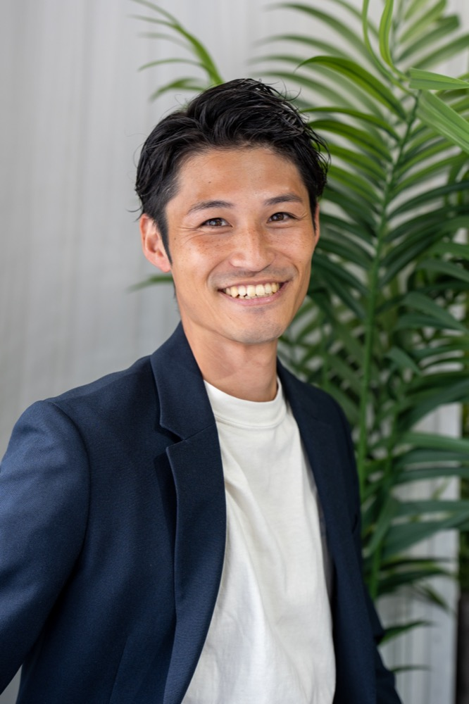

FRAMIA｜ライフデザイン型の結婚相談
結婚の前も、
その先も、
あなたらしく。
結婚を「急ぐ場所」ではなく、「整える場所」に。
元プランナー×ビデオグラファーが、13年・300組以上のご夫婦を
一番近くで見てきた視点で、出会いからその先の暮らしまで伴走します。
入会金 ¥0 ／ お見合い料 ¥0 ／ 無理な勧誘は一切なし
FOR YOU
よくある、あなたの
不安にお答えします。
恋愛経験の少なさは、FRAMIAでは"伸びしろ"として捉えます。まずは60分、あなたの言葉を整理する時間から始めましょう。
男性のご相談も、大歓迎です。FRAMIAは男女どちらにも開かれた相談所で、男性ならではの整え方（印象・言葉・振る舞い）にも寄り添います。
「早く決めてください」とは、絶対に言いません。FRAMIAは、あなたのペースを守るための場所です。
無料相談のその場で、入会を迫ることはありません。持ち帰って、じっくり検討していただけます。
FRAMIA とは
結婚を
「急ぐ場所」ではなく、
「整える場所」に。
否定しない／盛らない
経験の少なさを「伸びしろ」として捉えます。過去を責めることは、絶対にしません。
整える／その先の暮らしまで
出会いだけでなく、価値観・印象・関係の築き方まで伴走します。
焦らせない／伴走する
「早く決めて」は絶対に言いません。あなたのペースを、最後まで守ります。
男性の方へ
"モテ"を教える場所ではありません。印象・言葉・振る舞いを、あなたらしいまま整えていく場所です。
女性の方へ
条件よりも、価値観と暮らしの相性を、一緒に整理していきます。

代表紹介
13年間、結婚式の現場に
いました。
田中 陣 Jin Tanaka
プランナーとして3年。ビデオグラファーとして10年。
300組以上のご夫婦を、一番近くで見てきました。
うまくいくご夫婦には、共通点がありました。
相手のことを自分の言葉で語れること。
自分の軸をちゃんと言葉にできていること。
結婚"後"の暮らしを、二人でイメージできていること。
この知見を、式場の外でも活かしたい。
結婚する人を「増やす」のではなく、
結婚してからも幸せな人を「増やす」手伝いをしたい。
それが、FRAMIAを始めた理由です。
結婚相談所というと「早く決めてくれる人を増やす場所」
というイメージがあるかもしれません。
でも、焦って選んだ結婚は、焦った暮らしにつながります。
だからFRAMIAでは、まず立ち止まります。
出会いから結婚、その先の暮らしまで。
一人で頑張ることを、一度やめてもいい。
ここには、伴走者がいます。
BENEFITS
FRAMIAを選ぶと、
何が変わるのか。
無料相談で聞くこと・聞かないこと
聞くこと
- 今、婚活で疲れていること
- 過去に感じてきた違和感
- 結婚に対して大切にしたい価値観
- 結婚後の暮らしのイメージ
- 今のお仕事や、休日の過ごし方
聞かないこと
- 年収・身長・家柄を最初から詰めること
- 過去の恋愛の「失敗理由」を責める形で聞くこと
- その場で入会を決めさせること
60分で持ち帰れること
- 01今のあなたにとっての「結婚」を、言葉にできる。
- 02婚活が止まっている"本当の理由"が見えてくる。
- 03あなたに合う相談所／合わない相談所の見分け方がわかる。
- 04「次の一歩」が、無理のない形で1つ決まる。
料金プラン
| 登録料 | ¥33,000 |
|---|---|
| 活動サポート費 | ¥44,000 |
| 月会費 | ¥11,000 |
| 成婚料 | ¥220,000 |
※すべて税込表示です。
活動サポート内容
- 人生棚卸し面談 → プロフィール作成
- お見合いを組むためのサポート全般
- お見合い後の振り返り
- 面談（対面・オンライン）
- オンライン面談 月1回45分
- LINE・電話でのサポート（随時無制限）
PROOF
FRAMIAという相談所について。
IBJ（日本結婚相談所連盟）正規加盟
お客様の声
FRAMIAは開業したての相談所です。
だからこそ、一人ひとりにかける時間に、限界を作りません。
成婚者の声は、順次公開していきます。
FAQ
よくある質問
FRAMIAは結婚を「急ぐ場所」ではなく「整える場所」にしたいと考えています。まずはあなたにとっての「結婚」を言葉にする時間から始めます。「早く決めてください」とは、絶対に言いません。
13年間、300組以上のご夫婦を一番近くで見てきました。うまくいくご夫婦には共通点があり、その知見を「結婚する人を増やす」のではなく「結婚してからも幸せな人を増やす」手伝いに使いたいと思ったからです。
あなたの大切にしたいものを言葉にする60分です。まずは、少しずつあなたのことを教えてください。
絶対にしません。
はい。全国どこからでもオンラインでご相談いただけます。
いいえ、退会は自由です。あなたの人生に関わることを無碍にはしません。
大丈夫です。恋愛経験の少なさはむしろ「伸びしろ」。自分自身の在り方を見つめた上で進めていきましょう。
あります。アプリは「条件で選ぶ」場、結婚相談所は「価値観で選ぶ」場です。
はい、歓迎しています。
大丈夫です。カメラマンの経験を活かし、写真の見せ方までご相談いただけます。
日本結婚相談所連盟。全国約11万名の会員の中からお相手を探せる日本最大級のお見合いネットワークです。
IBJのシステムでお相手を探し、お互いの了承が得られたら1時間程度のお見合い。お見合い料はかかりませんが、一つ一つの出会いを大切に進めましょう。
人生棚卸し面談、お見合いサポート全般、振り返り、オンライン面談月1回、LINE・電話サポート随時無制限です。
CONTACT
ここから、
あなたのペースで。
結婚の前も、その先も、
あなたらしくいられるように。
まずは60分、お話ししましょう。